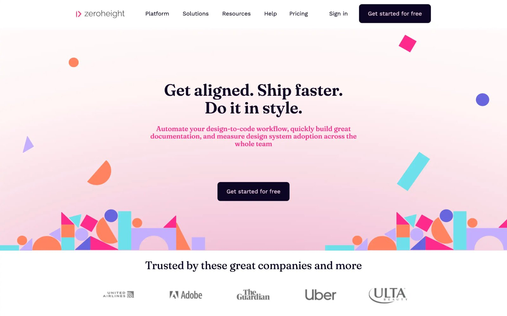
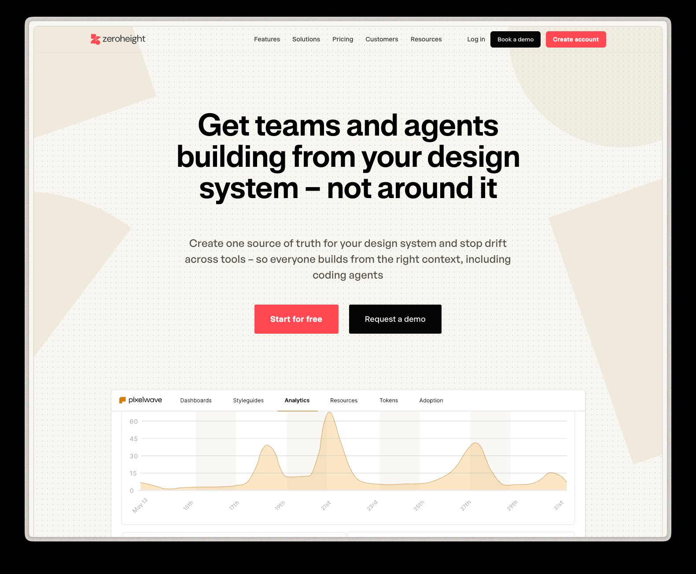
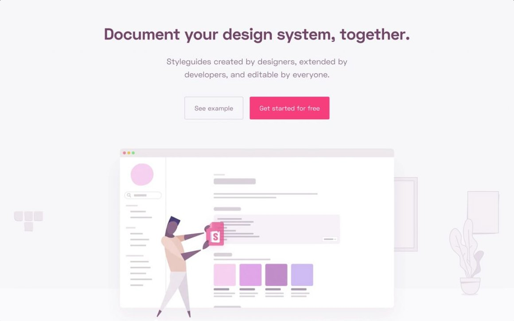
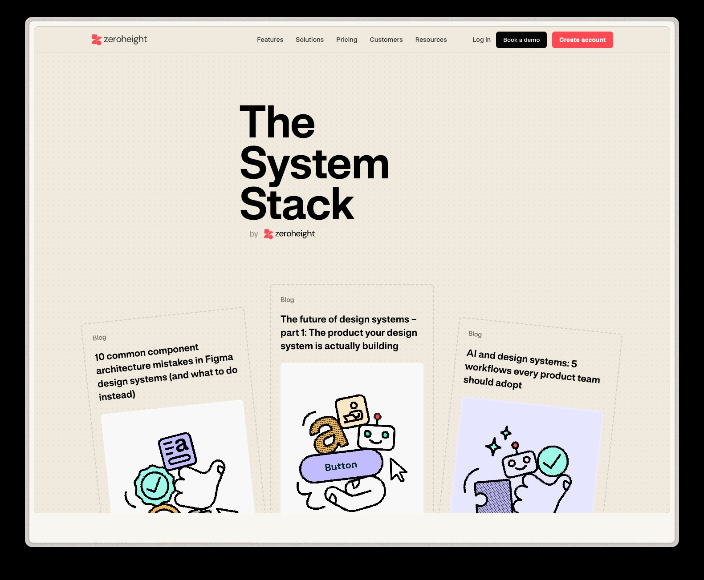

Building a design function that could operate with clarity, connect directly to business outcomes, and raise the standard of design thinking across a product-led SaaS organisation.
zeroheight is a design system platform — a company that sells design maturity to others. That raised the bar for internal design credibility from day one.
The design team had talent but lacked the infrastructure to operate at a senior level: no shared goals, limited connection to company priorities, inconsistent working practices, and a brand that hadn't kept pace with the product's ambition. My role was to build that infrastructure without disrupting the team's momentum or losing what was already working.
The challenge wasn't purely internal. As a Head of Design at a company whose core product is about design system maturity, I had to build credibility in both directions — with the product organisation, and with customers who expected the company's own design standards to model what they were buying.
Design strategy documents that live in Notion and get forgotten aren't strategy. I wanted something the team could reference when prioritising work, and something I could use to advocate for design at a leadership level.
"Design's role is not just to deliver features — it's to make the product more consistent, more meaningful, and more compelling. Each of those outcomes has a direct line to business value."
I developed a design strategy organised around three pillars that connected craft to commercial outcomes. The intention was to give each designer a lens for evaluating their own work — not just whether something was shipped, but whether it moved the needle in a direction that mattered to the business.
These pillars weren't abstract — I mapped them directly to the company's commercial priorities using the 20 Business Levers framework as a reference model. Each pillar had both direct and indirect lines to revenue, cost, and customer outcomes. Designers could see where their work sat in that map, and use it to sharpen how they talked about impact in cross-functional settings.
Before I introduced a more structured approach, design goals were largely output-based — ship this feature, update that component. There was no shared language for why the work mattered.
A strong design team that operates invisibly isn't a strategic asset. Part of my role was making sure design was present at the right moments — in planning, in cross-functional conversations, and in how the company communicated externally.
One of the persistent problems in design teams is the gap between what designers know their work achieves and what they can articulate to leadership. I set out to close that gap — for myself and for the team.
I introduced three frameworks as shared tools for the team: the 20 Business Levers (mapping impact to direct and indirect commercial outcomes) and the Four Layers of Design Value (Organisational, Product, Customer, Financial). These weren't presented as academic frameworks — they were practical tools for writing better goal statements, justifying design time in planning, and narrating the impact of shipped work in retrospectives and performance conversations.
The Four Layers framework was particularly useful for the rebrand and for making the case for design system investment. It gave us a structured way to articulate impact at four levels simultaneously — from how the work affected internal team ways of working (Organisational), through to revenue and lifetime value outcomes (Financial).
Items highlighted in red are those the design team's work at zeroheight directly or indirectly moved. Making this explicit — both internally and in how we communicated with leadership — changed the nature of the conversation design could have about its own value.
Team maturity doesn't come only from process — sometimes it requires bringing in the right person. I carried out recruitment to address specific weaknesses I'd identified and to lift the overall standard in areas the team couldn't reach on its own.
The rebrand was one of the largest design-led initiatives of my time at zeroheight — and one of the clearest examples of design operating as a strategic function rather than a delivery service.
The brand had not kept pace with the product's ambition or the company's position in the market. I worked with the brand designer and cross-functional stakeholders — including the head of marketing and head of advocacy — to align on positioning, then led the rollout across internal and external touchpoints.
The website rebuild (with an external agency, beginning March 2025 and running approximately 16 weeks) was the most visible output, but the scope extended to all branded materials: presentation decks, newsletters, social assets, Figma Community materials, and the product itself. I defined the governance model — including brand guidelines, training for internal stakeholders, and a product-brand representation framework that set standards for how the visual identity should appear inside the product.




"The rebrand wasn't a cosmetic exercise. It was about making the company's design credibility visible to the customers we were asking to trust us with their design systems."
The context made standard leadership challenges harder. Every decision I made about the team's process, tooling, or output quality was also a statement about what we believed good design practice looked like — and our customers were watching. That pressure was useful: it forced a higher standard of rigour and made me think carefully about what I was willing to put our name on.
The thing I'd do differently is move faster on connecting design goals to business language. The frameworks existed, but I spent too long building internal confidence before taking them into cross-functional settings. The team had more to offer to the commercial conversation than they initially knew — and the sooner you give people that vocabulary, the more clearly they can advocate for their own work.
The handover I built before leaving — with assigned owners, documented rituals, and clear operational expectations — reflected what I wished had been in place from the start: a design function that could sustain its own standards without needing me in every room.